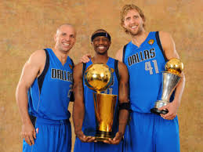
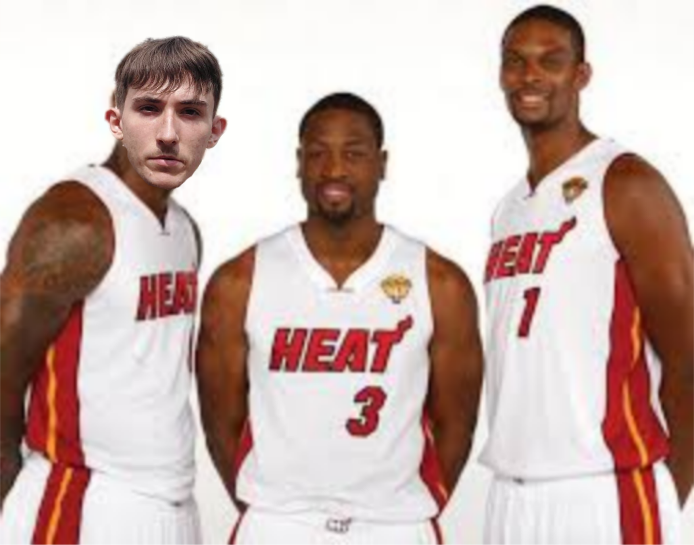
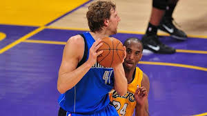

Derrick Rose postao je najmlađi MVP u povijesti NBA-a s 22 godine.
Predvodio je Chicago Bullse do najboljeg omjera u ligi (62-20)
i vratio nadu stanovnicima Chicaga.
Dallas Mavericks osvajaju naslov

Dirk Nowitzki i Dallas Mavericks šokirali su svijet pobjedama nad Lakersima i
Miami Heatom u finalu. Bio je to prvi naslov u povijesti za Dallas,
a Dirk je proglašen najkorisnijim igračem finala nakon povijesnih nastupa.
Miami Heat "Big Three"

Sezona je također bila obilježena stvaranjem "Big Three" u Miamiju:
LeBron James, Dwyane Wade i Chris Bosh. Iako su igrali dobro zajedno,
njihova sezona ostala je zapamćena kao neuspjeh nakon poraza u finalu.
Ostali trenuci

Kobe Bryant i Lakersi tražili su "three-peat", ali su u drugoj rundi naišli
na Dirka i prijatelje koji su ih pomeli 4-0.
Legendarna prva sezona Blake Griffina
Nakon što je prijašnju sezonu proveo na klupi i trbinama radi ozlijede
Blake griffin je imao jednu od najboljih rookie sezona ikada sa 22.5 poena i 12.1 skokova po utakmici
postao je jedan od 45 igrača koji su u svojoj prvoj sezoni ušli u all star tim, također je završio deseti u glasanju za MVP.